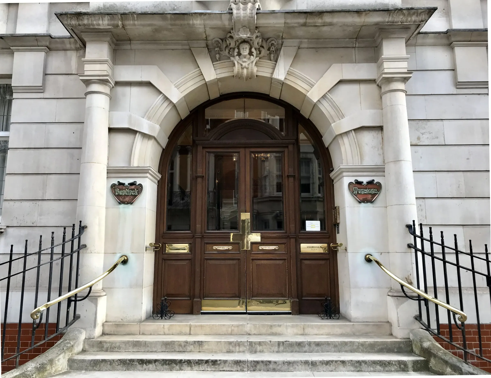

American
Visa Guide
End-to-end guide for US family immigrant visas through the US Embassy London. Based on official sources and real community experience.
This guide covers consular processing of US family-based immigrant visas through the US Embassy in London. It covers IR and F visa categories for spouses (IR-1/CR-1), children (IR-2), parents (IR-5), and family preference (F visas).
IR (Immediate Relative) visas — CR1, IR1, IR2, IR5 — are not subject to annual numerical limits. Once the I-130 is approved, the case moves straight through NVC and into the embassy queue. The timelines in this tracker reflect IR cases.
F (Family Preference) visas — F1, F2A, F2B, F3, F4 — are subject to annual caps and can have multi-year waiting periods. Before the embassy queue is relevant, the beneficiary's priority date must first become current on the monthly Visa Bulletin. Once current, the case enters NVC processing and follows the same London embassy process as IR cases. F visa holders should monitor the Visa Bulletin closely — the embassy queue only begins once a visa number is available.


Visa category by petitioner type and relationship
This process is not difficult. It is procedural. Most delays are caused by incomplete preparation, not complexity.
What this guide does NOT cover
- Local I-130 / DCF filing — used when a US citizen resides in the UK and meets exceptional criteria
- Adjustment of Status (AOS) — used when the beneficiary is already inside the United States
Visa categories at a glance
Immediate Relative (IR) visas have no annual cap — once the I-130 is approved the case moves straight to NVC. Family Preference (F) visas are subject to annual numerical limits and require the priority date to be current on the Visa Bulletin before NVC processing begins.
Immediate Relatives (IR) — no annual cap
Spouse of US citizen, married <2 years at US entry. Conditional green card, valid 2 years. Requires I-751 to remove conditions before permanent residency and citizenship eligibility.
Official info ↗Spouse of US citizen, married ≥2 years at US entry. Green card valid 10 years. No I-751 required. A CR1 automatically converts to IR1 if the marriage crosses 2 years before entry.
Official info ↗Unmarried child under 21 of a US citizen. Child must not be a US citizen at birth (if so, CRBA applies instead). Can be CR2 (parents married <2 years at entry) or IR2 (≥2 years).
Official info ↗Parent of a US citizen, where the petitioner is 21 or older. No annual cap. Green card valid 10 years. The US citizen child files the I-130 as the petitioner.
Official info ↗Classification is determined at US entry, not at I-130 approval. Carry your original marriage certificate when entering. If your marriage crosses the 2-year mark before you enter, bring proof of that. The same applies to CR2/IR2 for children.
Family Preference (F) — subject to annual caps
These categories require the priority date to be current on the monthly Visa Bulletin before NVC processing begins. Waits can range from months to over a decade depending on category and country of chargeability.
Spouse and unmarried children under 21 of a lawful permanent resident (LPR). Shortest wait among preference categories.
Official info ↗Married child of a US citizen (any age). Spouse and minor children can be included as derivatives.
Official info ↗Sibling of a US citizen, where the petitioner is 21 or older. Longest waits of all preference categories — often 10+ years depending on country.
Official info ↗Once a priority date is current and NVC processing begins, all categories follow the same London embassy process described in this guide. The timelines on the data page reflect IR cases — F visa holders should expect the same steps but cannot rely on the same wait time figures.
The I-130 establishes a qualifying relationship between petitioner and beneficiary. It does not assess finances or issue a visa. Output is an approval (NOA2), which moves the case to the National Visa Center.
Evidence: spouses (CR1/IR1)
This is the highest scrutiny category. USCIS is assessing fraud risk, not romance. Lack of financial integration is the most common weakness.
- Joint financial accounts
- Lease or mortgage in both names
- Insurance policies naming each other as beneficiaries
- Tax returns (joint preferred)
- Photos over time — organised in a document with name, date, location
- Travel history and communication logs
Linking family I-130 applications (IR2, IR5)
If you are filing I-130 petitions for multiple family members — for example, a spouse and a child, or a parent and a sibling — USCIS will not automatically link them. You need to make the connection explicit so the cases move through NVC together. Follow these steps:
USCIS must review everything you upload. Label files clearly and repeatedly. The more explicit the connection, the less likely the cases are treated as unrelated.
If a child is born in the UK to a US citizen parent, they may already be a US citizen at birth. If so, they do not need an immigrant visa — they need a CRBA (Consular Report of Birth Abroad) to prove that citizenship, plus a US passport to travel. This is handled entirely separately from the I-130 process.
If a child is a US citizen at birth, filing an I-130 (IR2) is the wrong route. Assess CRBA eligibility first — it is faster, cleaner, and bypasses the entire visa process. The operative question is whether the US citizen parent meets the physical presence requirement.
If the child is not a US citizen at birth, proceed with I-130 as an IR2.
What the CRBA is
- Official proof of US citizenship at birth for a child born abroad to a US citizen parent
- Must be applied for before age 18 — ideally soon after birth
- Strongly recommended before the child travels to the US, as US citizens must enter on a US passport
- A single appointment covers the CRBA, first US passport, and optional SSN application
Jurisdiction — where to apply
- Child born in UK → apply at US Embassy London
- Child born elsewhere but living in UK → apply in London, but the case is forwarded to the embassy in the country of birth → longer processing
- Child already in the US → cannot apply for CRBA; citizenship is adjudicated via first US passport application instead
Core eligibility: physical presence requirement
The US citizen parent must prove they lived in the US for at least 5 years before the child's birth, including at least 2 years after age 14. This is where most cases succeed or fail — weak evidence here causes delays or refusal.
- School transcripts covering US years
- US tax records (W-2s, 1040s)
- Employment records from US employers
- US driving licence history
- Medical records from US providers
- Any official documentation showing continuous US residence during the qualifying period
Full guidance: US Embassy London — Proof of Physical Presence (Oct 2025)
The process — step by step
Documents required
- Long-form UK birth certificate (with both parents listed)
- Passport photo
- Child's other nationality passport (if applicable — you do not have to surrender it)
- Proof of US citizenship (US passport or naturalization certificate)
- Evidence of 5 years physical presence in the US before child's birth, including 2 years after age 14
- Marriage certificate (if applicable)
- Divorce or death certificates (if prior marriages)
- Passport or national ID
- DS-3053 notarized parental consent (if not attending in person)
- Prepaid Royal Mail Special Delivery return envelope — this is mandatory and must be brought to the appointment. Without it the CRBA and passport cannot be returned to you.
- The DS-11 must be left unsigned until you are at the appointment — do not sign it in advance.
Key risks and edge cases
- Not eligible for CRBA — if the physical presence requirement is not met, the child may need the Child Citizenship Act route or an I-130 immigrant visa instead
- Multiple children — separate appointments required per child, though they can be coordinated to run consecutively
- Lost CRBA — replacements must be requested from the US Department of State, not the London embassy
- Born outside UK — case is forwarded to the country of birth embassy; processing takes longer
After USCIS approves the I-130, your case transfers to the National Visa Center (NVC). NVC collects fees, the DS-260 visa application, financial documents, and civil documents before forwarding the case to the US Embassy London for interview scheduling. The goal of this stage is to reach Documentarily Qualified (DQ) status.
Full step-by-step NVC guidance is available via the community Discord NVC channels, which follow the official NVC process at Travel.State.gov.
Step 1 — Welcome Letter
Usually 1–7 days after I-130 approval (occasionally 2–3 weeks — not a cause for concern). NVC emails both the petitioner and beneficiary from National_Visa_Center@state.gov with the subject Notice of Immigrant Visa Case Creation. The email contains your NVC Case Number (3 letters + 10 digits) and Invoice ID Number (IVSCA + 11 digits). Save both — you need them to access CEAC.
If you do not log into CEAC or communicate with NVC for 12 months, your case can be terminated under INA §203(g) — even if NVC has not contacted you. Log in and upload documents every 6–11 months to keep the case active if your process is slow.
Step 2 — CEAC
Log in at ceac.state.gov/IV using your Case Number and Invoice ID. It can take up to 72 hours after the Welcome Letter for the account to activate. CEAC is where you pay fees, submit the DS-260, upload documents, and receive messages from NVC.
Step 3 — Fees
| Fee | Amount |
|---|---|
| Immigrant Visa (IV) Application Processing Fee | $325 |
| Affidavit of Support Fee | $120 |
Requires a US bank account. The two fees must be paid sequentially — not simultaneously. Allow up to 10 calendar days for fees to clear before DS-260 becomes accessible. More info: NVC fee guidance.
Step 4 — I-864 Affidavit of Support
The petitioner must meet 125% of the US Federal Poverty Guidelines based on household size. If income is insufficient or the petitioner lives abroad (foreign income typically counts as $0), a joint sponsor is required. Use the NVC Poverty Guidelines Calculator to check eligibility.
The I-864 must be wet signed — print, sign by hand, scan back in. Do not use a digital or e-signature. The I-864EZ is available for simple cases but many users encounter issues with it; the standard I-864 is recommended for all.
London has demonstrated reluctance to rely solely on assets. Cases relying primarily on savings, property equity, or investments have received 221(g) even when technically meeting asset thresholds. If income is close to the threshold, irregular, or asset-heavy — secure a joint sponsor before submission.
Use the worksheet to prepare all answers before entering CEAC. The form is long and CEAC is unreliable — working from a completed worksheet avoids losing progress.
📄 Open I-864 WorksheetStep 5 — Financial documents
- IRS Tax Return Transcript — most recent year, from IRS.gov (create an account via ID.me if you don't have one). Use Tax Return Transcripts specifically — they have been accepted and verified by the IRS. Up to 3 years of transcripts is advised.
- W-2s / 1099s
- Proof of current employment — employment letter and recent pay stubs
- Joint sponsor: separate I-864, their own tax transcript, W-2s, proof of US status and domicile
- Evidence of US domicile (even if not listed as required) — upload under "Other": driver's licence, job offer, lease, US bills, school enrollment, moving quotation, or intent letter
Step 6 — DS-260
The DS-260 is the immigrant visa application form, completed in CEAC. CEAC times out after ~10 minutes of inactivity and progress is lost. Prepare all answers in advance using the worksheet before logging in. Once submitted you cannot edit it — double-check everything.
You will need: passport details, all addresses from age 16, employment history (10 years), travel history (5 years), family information, and US contact details. Print the DS-260 confirmation page after submitting — it is required at the medical and interview.
For the vaccination question: if you plan to get missing vaccines at the medical, select "Other" and explain in the dialogue box.
For children who are US citizens (e.g. via CRBA), the answer to "Is the child immigrating with you?" is No — they are returning as a citizen, not immigrating.
Complete this before logging into CEAC to avoid losing progress to timeouts.
📄 Open DS-260 WorksheetSteps 7–9 — Civil documents, scanning, and submission
- Birth certificate (long form with parent names)
- Marriage certificate
- Divorce or death certificates (if applicable — all prior marriages)
- UK ACRO Police Certificate — required for all applicants aged 16+. Valid 24 months for NVC purposes regardless of any shorter local validity.
- Foreign police certificates — required for every country lived in for 12+ months after age 16, or any country of citizenship
- Passport biographic page
- Court, prison, or military records (if applicable)
Non-English documents require certified translations. Check the NVC Document Finder / Reciprocity Schedule for country-specific requirements. Scans must be colour, all pages included, max 4MB per file, PDF preferred.
After uploading all documents, click Submit Documents — uploading alone does not enter you into the review queue. Do not mail originals to NVC; bring them to the interview.
Step 10 — DQ (Documentarily Qualified)
After submission, NVC reviews your case. Typical review time is 14 days if no issues. Possible outcomes:
- RFE (Request for Evidence) — fix the issue, re-upload, resubmit. The 14-day clock restarts after each resubmission.
- DQ (Documentarily Qualified) — all documents accepted. Case moves to embassy scheduling queue. Your CEAC status will still show "At NVC" until you receive your Interview Letter — this is normal.
- Uploading documents to the wrong CEAC category
- Missing police certificates for countries lived in
- Incomplete financial evidence — assets without income-based sponsorship
- I-864 digitally signed instead of wet signed
- PCC placeholder not replaced with the actual certificate before interview
- Adding a joint sponsor mid-process causes a 2–3 day CEAC lockout — plan ahead
Full submission checklist with financial documents, civil documents, upload standards, and failure points.
📋 Open NVC ChecklistAfter DQ, your case is complete at NVC and enters the embassy scheduling queue. This stage is primarily a waiting and preparation phase — not an action phase. Your CEAC status will still show "At NVC" until your Interview Letter arrives. That is normal.
- Your interview has been scheduled
- Your case has moved to the embassy in CEAC — status often still shows "At NVC"
- That you are guaranteed a visa
- That additional documentation won't be required
56 days
DQ → Interview Letter
Community average — excludes expedited cases
The wait has been increasing. Previous month average was 77 days. If your DQ is recent, plan for the longer end of the range. See the data page for current figures.
How IL drops work
The embassy schedules interviews in batches, not continuously. Batches are not on a fixed schedule but tend to arrive at least once monthly — historically often in the second week of the month, though this varies. Occasionally there are multiple drops in one month. Whether you receive an IL in a given batch depends on your DQ date relative to others in the queue.
If you have multiple applicants on the same case — for example, a spouse and children who were ineligible for a CRBA, or stepchildren — they may reach DQ at different times and be assigned different interview dates.
You need to contact the embassy directly and ask for all cases to be combined into the same interview appointment. Include the IOE numbers (case reference numbers) for all applicants in the email. The embassy can bundle them together so everyone is seen on the same day.
Email: LNDIVSubmissions@state.gov
Do this as soon as you are aware of the differing DQ dates — do not wait until ILs have already been issued separately.
When do ILs arrive?
Based on observed London channel data, ILs arrive by email from National_Visa_Center@state.gov with the subject Immigrant Visa Interview Appointment, typically early-to-mid afternoon UK time (around 13:30–15:30), most often mid-week (Tue–Thu). A CEAC status update follows.
IL → Interview: observed pattern
Pattern observed from London community members. IL → interview is typically ~2 months.
What the IL email looks like
The Interview Letter arrives by email from National_Visa_Center@state.gov with the subject Immigrant Visa Interview Appointment, typically early-to-mid afternoon UK time (13:30–15:30), most often mid-week (Tue–Thu). A CEAC status update follows.
Immigrant Visa Unit · Embassy of the United States of America · 33 Nine Elms Lane, London, SW11 7US
Dear [Beneficiary],
Case Number: LND01234567891
Interview: [TIME] [DAY], [DATE]
We are pleased to confirm that the Immigrant Visa Unit at the U.S. Embassy in London has received an approved petition in your name. To complete your application, you must attend two separate appointments at the U.S. Embassy:
- Document Review – Immediately following your medical examination
- Visa Interview – With an immigration consular officer
[Email continues with steps 1–4 and public charge statement — see guide sections below]
Actions after receiving your IL
1. Register your interview via AIS — you must select your passport return method at this stage: home delivery or Mail Boxes Etc collection (Holborn, Angel, or Belfast). If you do not complete this, the embassy has no way to return your passport to you. Note: registration may take a few days to appear after the IL arrives.
2. Book your medical via VisaMedicals — appointment windows open monthly and fill quickly. The medical must be 10 working days before your interview date. You are required to attend the same-day embassy document check afterwards (window: 11:45 AM – 1:00 PM).
Registration on AIS may take a few days after the IL arrives. If you have previously used AIS for a non-immigrant visa (e.g. B1/B2), you will likely need to create a new account for the immigrant visa process. Escalate after ~5 business days if unresolved: UK.Visas@gdit-gss.com
Use the waiting time to prepare
This period is your best opportunity to get organised before things accelerate. Work through this list systematically.
- Order your ACRO police certificate — valid 24 months for NVC purposes. Standard: £68, up to 20 working days. Premium: £121, up to 2 working days. Order early — do not leave this to the last minute. acro.police.uk
- Check all civil document originals are accessible — marriage certificate, birth certificate, divorce decrees. Confirm nothing is expiring or needs replacement.
- Prepare I-864 financial documents — recent pay stubs, most recent employment letter confirming salary, IRS tax transcripts (up to 3 years), W-2s. If using a joint sponsor, ensure they have the same.
- Check your passport expiry — must be valid for at least 6 months beyond your intended US entry date. Apply for renewal now if needed.
- Request your GP Summary Care Record — time this within 2–3 weeks of your medical appointment date. Do not request too early. Ask your GP for a printout of your full patient summary including medications, significant history, and vaccinations.
- Gather vaccination records and check against CDC requirements. Common gaps: Hepatitis A & B series, Polio (must be within 12 months), Varicella. Consider getting missing vaccines from your GP in advance — cheaper than at the clinic.
- If you have a significant medical history (cancer, HIV, TB, depression, or other chronic conditions), start gathering supporting documentation now — diagnosis, treatment, current status reports from your doctor.
- Book accommodation early — you will need two separate London trips: one for the medical + document check, one for the interview. These cannot be combined unless you have an expedited interview.
- Medical day accommodation — near VisaMedicals (Marylebone/Marylebone High Street area). Recommended options: Durrants Hotel (Georgian, quiet, 5 min walk), Marylebone Hotel (modern, slightly upmarket), or Premier Inn London Baker Street (budget, reliable, very close).
- Interview day accommodation — near the embassy at Nine Elms/Vauxhall. Recommended: Travelodge London Vauxhall (most popular with applicants — directly convenient), Novotel London Waterloo (slightly more comfortable, 15 min walk), or Premier Inn London Waterloo (budget option, well-located).
Does the petitioner attend the medical or interview? No. Only the beneficiary attends both.
Do I need the original I-864 mailed to me? No. A printed copy is sufficient.
Expedited interviews
Expedited interviews are available in genuine emergency situations such as serious medical need. They are not a workaround for queue position. Community data shows 4 expedited cases — these are excluded from wait time calculations as they are not representative of the standard process.
All applicants must complete a medical exam with an approved panel physician before the interview. For the entire United Kingdom, the only approved clinic is VisaMedicals in London.
To request: email NVCexpedite@state.gov
Address: 4 Ground Floor, Bentinck Mansions, 12–16 Bentinck St, London W1U 2ER
Phone: 020 7486 7822
Email: bookings@visamedicals.co.uk
Hours: Mon–Fri 09:00–16:30
Website: visamedicals.co.uk/united-states

VisaMedicals entrance — Bentinck Mansions, 12–16 Bentinck St, London W1U 2ER
Timing and booking
The medical must be 10 working days before your interview. Visa Medicals appointment windows open monthly (e.g. May interviews can book from approximately 1 April). Book as soon as the window opens — slots fill quickly. You are required to attend the same-day embassy document check after your medical (window: 11:45 AM – 1:00 PM). VisaMedicals will contact the embassy on your behalf if you are running late. You will be charged £100 if you cancel within 3 working days of your appointment.
Have the following ready when you call to book: full name and date of birth of all applicants, case (LND) number, visa category, interview date, ACRO police certificate, and a contact phone number or email. The medical must be 10 working days before your interview date.
Unless you have an expedited interview, everyone makes two separate trips: one for the medical and document check, one for the interview. There is no exception for distance or cost. Plan accommodation and travel well in advance.
GP Summary Care Record
Request a GP Summary Care Record from your GP — timed within 2–3 weeks of your medical appointment. It should include applicant and GP details, significant medical history, current medications, ongoing problems. Some practices also include recent appointments and vaccination history.
If you have a significant medical history (cancer, HIV, TB, depression, or other serious conditions), bring supporting reports outlining diagnosis, management, treatment, and current status. If anything further is required, the doctor will tell you on the day and you can email additional documents afterwards. VisaMedicals is understanding of a range of situations — contact them with any questions ahead of time.
What to bring to the medical
- Passport
- Interview letter
- DS-260 confirmation page
- Courier registration confirmation (with QR code)
- Completed medical questionnaire (IV18a)
- ACRO police certificate
- GP summary dated within 2–3 weeks
- Vaccination records
- Glasses or contact lenses (if applicable)
- Medical reports for any chronic, serious, or mental health conditions (if applicable)
- Psychiatric documentation (if applicable)
- TB or STI records (if applicable)
- Child health records (if applicable)
What happens at the medical
- Check-in and digital photo
- Document review
- Chest X-ray (age 15+)
- Blood test (age 18+)
- Urine test (age 18+)
- Physical examination (in a gown)
- Vaccine review and administration
You will receive a pink checklist slip at the end. Bring this to the same-day embassy document check — do not lose it.
Vaccinations
Common requirements: MMR, Tetanus/Diphtheria, Hepatitis A & B, Varicella (or documented history), Polio (within 12 months), Flu (Oct–Mar only). COVID-19 is no longer required. Hepatitis B requires three doses but you only need to have started the series — remaining doses can be completed in the US. Bring official documentation of past vaccinations; they will often take your word that you had chickenpox as a child.
If you decline vaccines for medical, moral, or religious reasons, a waiver is required via USCIS I-601. The waiver process takes approximately 36 months. Until resolved, your medical will be marked inadmissible.
Chest X-ray is required for age 15+. You can defer until after birth or after 12-week scan. No live vaccines (MMR, Varicella) during pregnancy. Deferrals may delay visa issuance.
Medical fees (Dec 2025 prices)
| Category | Fee |
|---|---|
| Adults 45+ (medical + X-ray) | £400 |
| Adults 25–44 (medical + blood) | £430 |
| Adults 18–24 (medical + blood + urine) | £450 |
| Children 15–17 | £365 |
| Children 14 and under | £250 |
| Additional tests | Fee |
|---|---|
| Drug screen | £95–£200 |
| QuantiFERON TB Gold Plus | £85 |
| TB Sputum Test (x3) | £130 |
| DNA Test (Adult) | £120 |
Prices subject to change. Common vaccines (MMR, Hep A&B, Varicella, Polio, Flu) are billed separately if needed — see VisaMedicals for current vaccine prices.
Same-day embassy document check
After the medical, go directly to the embassy. Do not go home first.
Address: 33 Nine Elms Lane, London SW11 7US
Window: 11:30 AM – 1:00 PM (window: 11:45 AM – 1:00 PM — go even if running late)
Getting there from VisaMedicals:
- Victoria line towards Brixton from Oxford Circus → Vauxhall, ~10 min walk — £3.10 contactless
- Bus 2 towards West Norwood from Portman Sq → Vauxhall Bus Station, ~12 min walk — £1.75 contactless
Do not stand in the main queue. On the right-hand side of the building, behind the main queue, there is a window with a sign that says "Pass Back". That is where you go. Present your pink checklist slip and passport. If you feel unsure, ask the staff at the head of the queue — they will direct you.
Inside: airport-style security, show your DS-260 confirmation, receive a queue number, wait upstairs, get fingerprinted, and receive a sealed "Do Not Tamper" envelope for interview day. Documents are typically checked one by one — having them organised in separate sleeves or sections makes this smoother. Many members use one binder for the medical and a separate one for the embassy.
Bring to the document check
- Passport
- Pink checklist slip (from medical)
- DS-260 confirmation page
- Civil documents (originals)
Medical arrival 8:40 AM → finished ~10:15 AM. Coffee break. Document check queue opens 11:45 AM → finished ~12:15 PM. The document check is usually quick and staff will confirm everything is in order — many members find this reassuring.
Community medical experiences
Reported by London channel members. All found the process professional and manageable.
Across all reported cases: medical typically 1–2 hours, embassy document check 15–45 minutes. Staff consistently described as professional and efficient.
US Embassy London: 33 Nine Elms Lane, London SW11 7US
Nearest stations: Vauxhall or Nine Elms. Common nearby hotel: Travelodge Vauxhall.
What officers are actually assessing
By interview day, most of the process is already complete — USCIS has approved the petition, NVC has accepted all documents, civil documents are verified, and the medical is done. The interview is primarily a final consistency and eligibility check, not a full re-evaluation. Interviews are brief and conversational. Officers are professional and direct. The decision is usually given immediately.

US Embassy London — 33 Nine Elms Lane, London SW11 7US
Arrival
Arrive 30–45 minutes before your scheduled appointment. Do not stand in the long queue for non-immigrant visas. Go directly to the staff member at the front and state clearly: "I am here for an immigrant visa interview." You will be directed past the main line.
What to bring
- Passport
- Sealed document packet (received at document check)
- Courier registration confirmation
In practice, these are often the only documents physically reviewed — most materials were pre-verified at the document check. Bring originals of everything else (I-864, marriage certificate, ACRO, tax documents, DS-260 confirmation) but expect they may not be requested. Officers rely primarily on what is already uploaded to CEAC.
- Laptops or large bags
- Unuploaded financial documents — the officer will not accept them
- "Backup" paperwork not already in CEAC
Financial issues are the dominant cause of 221(g) at London. If it is not already in CEAC before interview day, it is too late.
If your hotel cannot hold items, two options nearby: District Coffee (Nine Elms) and World Heartbeat Cafe.
Interview structure
The public charge assessment is not a test of wealth — it is a demonstration of intent and planning. The officer wants to see that you have thought through how you will support yourself in the US. A clear, specific plan reads as low risk. No plan reads as a red flag.
You are strongly advised to submit a written statement before your interview via email to LNDIVSubmissions@state.gov or by uploading to CEAC. The embassy states that applicants may voluntarily submit this statement — community experience strongly suggests you should. See our sample template → Cover three areas:
- Housing: Where will you live? Provide an address if confirmed. If not yet secured, explain your plan — who you'll stay with, what area, and your timeline.
- Employment: What work do you plan to do? Include your sector, relevant experience, and whether you have a role lined up or are job-seeking. If continuing with a current employer's US branch, say so explicitly.
- Health insurance: How will you be covered? The most straightforward answer is being added to a spouse or family member's employer plan once your SSN arrives — state the plan, provider, and expected timeline.
The statement doesn't need to be long or formal. A short, direct account of your housing, employment, and insurance plans is sufficient. The officer wants to see that you have a plan — not that you are wealthy. Plan = low risk. No plan = a red flag.
A strong I-864 from a qualifying sponsor is the primary public charge safeguard. The interview questions are an additional check. More info: travel.state.gov — Preventing Public Benefits Reliance
Common interview questions
Relationship
- How and when did you meet?
- When did you meet in person?
- When and where did you marry?
- Prior marriages?
- Children or stepchildren?
Living & financial
- Where does your spouse live?
- Where will you live in the US?
- What does your spouse do for work?
- Who is your joint sponsor?
- Arrest or residence history?
Answers must match your DS-260 and CEAC documents exactly. The interview is a consistency check — not a new evaluation.
Community interview experiences
All reported outcomes below are approvals. The pattern is consistent: short interview, long wait, professional officers.
Common pattern across all cases: skip the main queue, state "immigrant visa," two-step process (document window then interview window), interview 1–10 minutes, decision immediate. Check your sticker has the correct name and case number.
London visa enquiries: +44 20 3608 6998
Possible outcomes
Passport retained for visa printing. No further documents required. Community data: 94% of recorded outcomes at London are approved at interview.
Case paused pending additional items. Most common cause at London: financial sponsorship issues. Sometimes due to past visa denials.
Follow instructions emailed to you. Upload any requested documents to AIS (the same system used to register your appointment) and, if instructed, follow up with documents sent via courier.
If the beneficiary holds citizenship in a country affected by the current visa pause, the visa cannot be approved at this time. This is not a denial and not AP. If the beneficiary holds another unaffected passport, use that — ensure it is uploaded to CEAC.
The consular officer will explain the refusal and whether recourse is available. If eligible, you may file Form I-601 (Application for Waiver of Grounds of Inadmissibility). Form I-601 must be sent to a US address even if you are outside the United States. See the I-601 flowchart for filing guidance.
CEAC status tracking
Track at ceac.state.gov using your LND case number and passport number.
- Ready — case at embassy or pending final processing
- Administrative Processing — normal during final checks and printing after approval. Short-term AP after a successful interview is routine and is not the same as a 221(g).
- Issued — visa approved and printed. Passport will be handed to courier next.
Tracking your passport
AIS tracking mostly stays at "Appointment" and doesn't reflect where the passport actually is. The most reliable signal is the email notification when the passport is released to courier.
donotreply@usvisa-info.com — subject: "Yatri: U.S. Department of State Visa Documents Ready for Pickup". This confirms your passport has been released to the courier.
noreply@mbeglobal.com — home delivery notification from Mail Boxes Etc.
Passport return timelines
Typically 2–3 working days after interview. Example: Thursday interview → Monday/Tuesday pickup. Community average: 4 days.
Bring valid photo ID and your tracking number. MBE will hold your passport for 30 working days before returning it to the embassy.
Holborn: 19 Bury Place WC1A 2JB — Mon–Fri 09:00–18:00
Angel: 8 Duncan Street N1 8BW
Belfast: 38 Montgomery Business Park BT6 9HL — Mon–Fri 08:30–16:30
Visa queries: 0208 064 1342
Typically 5–7 days after interview, up to 2 weeks depending on routing. Community average: 11 days.
Watch for email from noreply@mbeglobal.com. Weekends and UK bank holidays may delay delivery — late-week interviews often shift into the following week.
USCIS Immigrant Fee ($235)
Pay the $235 USCIS Immigrant Fee to start green card (Form I-551) production. You can pay before or after entering the US — the timing affects when your card arrives:
- Paid before entry — card may take up to 90 days from your entry date
- Paid after entry — card may take up to 90 days from your payment date
- Not paid — card cannot be processed until you pay
Paying before you travel is recommended — it starts the clock earlier and avoids one less task after arrival.
- Pay via the direct link at my.uscis.gov — no login required to pay. Once paid, the IOE receipt number can be added to the beneficiary's myUSCIS account for tracking.
- A-Number: the Registration Number on your visa stamp. If fewer than 9 digits, the site adds a leading zero automatically
- DOS Case ID: the IV Case Number on your visa stamp, minus the last two digits (e.g. "ABC1234567801" → enter "ABC12345678"). The IV Case Number on your stamp has two extra digits at the end (such as 01 or 02) — do not include these.
- Pay at: my.uscis.gov by credit/debit card or US bank account (ACH)
If you do not pay, no physical green card will be produced. You can use the visa stamp in your passport until the card arrives, but the stamp causes issues for many employers and institutions unfamiliar with immigration status. Do not leave this fee unpaid.
Tracking your green card after payment
The green card is officially Form I-551 (Permanent Resident Card). When you pay the $235 fee, USCIS issues a receipt with an IOE number. This IOE number is associated with Form I-551 — it is distinct from both your visa case number and the IOE number assigned with your I-130. Use this I-551 IOE number to track green card production.
- Track status at egov.uscis.gov or via platforms like Case Tracker using the IOE number from your payment receipt
- The beneficiary should have their own myUSCIS account — this allows them to track the case directly and submit a change of address through the portal if needed
- The petitioner (primary sponsor) and any joint sponsors should also have their own myUSCIS accounts linked to the case
If your address changes after entering the US, the beneficiary can submit an AR-11 address change through their myUSCIS portal — faster and more reliable than the paper form. Having accounts set up before the green card is in production means you can act immediately if anything needs updating.
Present your passport with the immigrant visa at the port of entry. You are admitted as a lawful permanent resident from this moment.
At the port of entry
- Confirm or update your US address with the CBP officer — this determines where your green card is mailed
- Your sealed envelope from document check may be handed to CBP — do not open it
- If you have Global Entry, inform Global Entry in person of your change of visa status — easiest to do as you enter as a green card holder
You can travel via Ireland and clear US customs at Dublin Airport or Shannon Airport before your flight. This is fully valid for immigrant visa holders and counts as your port of entry.
Benefits: Arrive in the US as a domestic passenger (no immigration queues on arrival). Typically faster processing. Global Entry available at both airports.
Drawbacks: Limited options after preclearance (especially Shannon). Fewer backup flights if delays occur. Not all UK airports serve Dublin/Shannon year-round. Restricted movement once through preclearance.
Hours: Dublin 07:00–16:30 IST · Shannon 09:00–17:00 IST. If your flight is outside these hours, you will clear CBP on arrival in the US instead.
Green card
Green card (Form I-551) production begins once you pay the $235 USCIS Immigrant Fee. Delivery timelines per USCIS:
| Entry | Fee timing | When to expect card |
|---|---|---|
| Entered on immigrant visa | Fee paid before entry | Up to 90 days from entry date |
| Entered on immigrant visa | Fee paid after entry | Up to 90 days from payment date |
| Entered on immigrant visa | Fee not yet paid | Card cannot be processed until fee is paid at my.uscis.gov |
Source: egov.uscis.gov — When to expect your Green Card
Your green card is mailed to the address given at your visa interview, or the updated address at port of entry. If you move after arrival, update your address in the beneficiary's USCIS account (or by mail via AR-11) within 10 days — this is a legal requirement. The petitioner and any joint sponsor are also legally required to notify USCIS of an address change.
One community member's card was delivered to a previous address despite having updated it — the landlord forwarded it, adding a week's delay. After entry, take a screenshot of your address in your USCIS account to confirm it's correct.
Tracking numbers often don't appear in USCIS online status. To get your USPS tracking number contact USCIS directly: Ask Emma chat at uscis.gov, or call 1 (800) 375-5283 and request a live agent.
Some members receive an I-797C notice after entry requiring an Application Support Center (ASC) biometrics appointment before the green card is issued. This is not standard but has been seen where USCIS cannot use biometrics already on file — known triggers include prior green card holders (previous biometrics expire after 15 months) and photo or fingerprint quality issues from the embassy interview.
If you receive this notice: bring the I-797C, valid photo ID, and passport with visa stamp. Card production typically follows within days of the appointment. Do not skip it — the green card will not be produced until biometrics are completed. This does not indicate a problem with your case or PR status.
The Service Center code on the notice (e.g. FCE = Florida) reflects the processing centre, not your state of residence. The TCR field may be blank — this is normal.
Social Security Number
The SSN card is initiated automatically if you selected that option on the DS-260 — no separate action required. There is no way to track the card once it is in the mail.
If your card hasn't arrived within 4–6 weeks of entry, go to your local SSA office. Several members found the SSA had no record of their application despite having selected the option on the DS-260 — in those cases, staff processed a new application on the spot. Bring your passport with visa stamp and foreign birth certificate.
If the officer is unfamiliar with immigrant visas or asks for an I-94, the SSA's own policy manual explains how to process IV holders. It can help to bring a printout: secure.ssa.gov/poms.nsf/lnx/0110211025
Walk-ins are accepted at some offices — check Google reviews for your local office before going. Make or change an appointment here.
Common issues: card sent to wrong address, apartment number not recorded, card not initiated despite DS-260 selection. Confirm your full address including apartment number explicitly with SSA staff.
USPS Informed Delivery shows you scanned images of arriving mail before it's delivered. Sign up immediately after arrival — you'll see the green card and SSN card coming before they land in your mailbox.
Your data helps the community — takes 5 minutes
This section covers what to do after you arrive as a permanent resident — IDs, banking, driving, and the UK financial and tax obligations you need to manage from day one.
Becoming a US person triggers worldwide income reporting, FBAR and FATCA obligations, and potential PFIC exposure on UK investments. These are commonly missed and carry significant penalties. Address them early.
Green card and SSN — recap
- Pay the $235 USCIS immigrant fee — recommended before you travel to start the clock earlier, but can be paid after entry. Card takes up to 90 days from entry date (if paid before) or payment date (if paid after)
- Green card is typically mailed within 90 days of entry to your address on file — double-check your address in your USCIS account after arrival
- SSN initiates automatically if selected on DS-260 — if not arrived within 4–6 weeks, go to your local SSA office in person
- Register for USPS Informed Delivery to track both cards before they arrive
Getting ID: driver's licence and Real ID
Your first priority for US identification is a state driver's licence or state ID. Your green card and passport with visa stamp serve as ID in the meantime, but a state-issued ID is required for many everyday purposes.
Real ID is federally compliant — required for domestic flights and entry to federal buildings from May 2025. It requires more documentation than a standard ID.
Standard ID is valid for driving and general purposes but cannot be used to board domestic flights or enter federal buildings. If you have a passport you can use that for flights instead — but a Real ID is the cleaner long-term solution.
What you need for a Real ID driver's licence
- Permanent Resident Card (I-551)
- Temporary I-551 stamp in passport (the visa stamp counts)
- Employment Authorization Document (EAD)
- SSN card (cannot be laminated)
- W-2 form displaying 9-digit SSN
- Pay stub with name and SSN
- SSA-1099 form
- Utility bill, bank statement, or credit card statement (within 60 days)
- Current lease or mortgage
- Pay stub dated within 60 days
- W-2 or tax statement
- For Real ID: two residency documents required
Your name must match across all documents. If your name has changed (e.g. marriage), bring a marriage certificate issued by a municipality, divorce decree, or court document. This is required for Real ID; not required for a standard licence.
Massachusetts allows residents to obtain a standard driver's licence regardless of immigration status under the Work and Family Mobility Act (effective July 2023). For a standard licence you need proof of identity, date of birth, and Massachusetts residency — but not necessarily an SSN if it cannot be validated yet.
Start your application online and schedule a Class D learner's permit exam at your local RMV Service Center. The $30 exam is available in 34 languages; you must score at least 18/25 within 25 minutes. After the permit, you sit a road test to get the full licence. Check mass.gov/ID to get ready online before going in.
Requirements vary by state. Check your state's DMV website for the exact documents required in your state. The above reflects Massachusetts as an example.
Banking
Opening a US bank account is one of the first practical priorities. You need it for direct deposit, bill payments, and to pay the USCIS immigrant fee.
- Most major banks (Chase, Bank of America, Wells Fargo, Citi) accept permanent residents — bring your passport with visa stamp or green card, SSN (or ITIN if SSN not yet arrived), and proof of address
- Some banks allow account opening without an SSN initially — you provide it later once received
- Consider a credit union if you are new to the area — often more flexible for new residents
- Start building US credit immediately: apply for a secured credit card if you have no US credit history
- Your UK credit history does not transfer to the US — but you do not necessarily start from zero. Being added as an authorised user on a US person's card, using a credit-building secured card, or transferring an existing Amex card from the UK to the US (Amex has a global transfer programme) are all options members have used to start with some history already in place.
A secured credit card (you deposit a fixed amount as collateral) is the standard starting point. Use it for small regular purchases and pay it off in full each month. After 6–12 months of on-time payments you will have enough history to apply for unsecured cards. Do not carry a balance — the interest rates are high and it is unnecessary for building credit.
UK obligations — before you leave
If you want to retain UK voting rights, register before you leave: gov.uk/voting-when-living-abroad
When leaving the UK, file a P85 form to establish non-UK residency. This prevents incorrect taxation, may trigger tax refunds (note: HMRC typically mails a paper cheque to your US address — ensure you have a way to deposit it), and establishes your departure date for UK tax purposes.
You can continue making voluntary NI contributions while living in the US. This is worth considering carefully:
- 10 years of contributions = minimum eligibility for UK State Pension
- 35 years of contributions = full UK State Pension
- Voluntary contributions are relatively inexpensive and the UK State Pension is index-linked — many UK emigrants consider continuing them good value
This is one of the most commonly missed and costly issues for UK → US movers. Once you become a US person (green card holder), ISAs lose their tax-advantaged status in the US. Worse, Stocks & Shares ISAs typically hold non-US funds classified as PFICs (Passive Foreign Investment Companies) under US tax rules.
PFICs are heavily penalised in the US: complex annual reporting (Form 8621 per fund), punitive tax treatment on gains, loss of favourable capital gains rates, and significant compliance costs.
Cashing out ISAs after becoming a US person triggers PFIC taxation. The options before becoming a US person are: liquidate ISA holdings, restructure into US-compliant investments, or accept ongoing reporting complexity.
Speak to a UK/US cross-border tax professional before making any decisions. Do not assume your UK accountant or a standard US tax preparer will handle this correctly.
US tax obligations as a green card holder
As a green card holder you must file US taxes annually and report worldwide income — regardless of where income is earned or whether tax was already paid in the UK. A tax treaty generally prevents double taxation, but you still must report everything. For the first year, use a tax preparer experienced in international/expat filings.
FBAR — Foreign Bank Account Reporting
If your total combined foreign account balances exceed $10,000 at any point in the year (cumulative across all accounts, not per account), you must file an FBAR. This covers all UK bank accounts, ISAs, and investment accounts.
- Report all foreign account details, highest balance during the year, and year-end balance
- File at: bsaefiling.fincen.treas.gov
- This is one of the most commonly missed obligations and carries significant penalties
- Consolidate UK accounts before moving where possible and maintain clear balance records
FATCA — Form 8938
If you hold foreign financial assets over approximately $50,000 (varies by filing status), you must also file Form 8938. This covers foreign bank accounts, investments, and certain pensions. More info: irs.gov/forms-pubs/about-form-8938
Form 3520 — Foreign gifts
If you receive large foreign gifts (including from family in the UK), this may need to be reported via Form 3520. It is a reporting requirement, not necessarily a tax. More info: irs.gov/forms-pubs/about-form-3520
Tax preparation — UK → US transition
Many UK-based US tax preparers do not support clients after relocation. Register with an expat specialist early — before your first US filing year — and expect higher costs for that first year. It is worth it to get it right.
Regional community chats
London members have set up regional Signal groups for ongoing support after arrival. These use Signal so you do not need to exchange phone numbers until you are ready.
- California: Join group
- Massachusetts / New England: Join group
Your data helps the community — takes 5 minutes
These checklists are used by the London community. Download, print, or open on your phone for each appointment.
The binder in practice
Organisation matters more than people expect — the document check window staff go through documents one by one, and having them in labelled sections makes this faster and less stressful. Two setups that members have used:


Official sources
Community resources
- Submit your visa timeline
- Moving to the USA Workbook — created by Nikki, a brilliant mod on the Track My Visa server going through the US Embassy London, who built this resource to share with everyone who needs it.
Track My Visa is a third-party case tracker for USCIS cases that surfaces data from the underlying API before it appears in the USCIS UI — useful for spotting case movement early during the I-130 stage. Their I-130 Consular Processing Discord is an active community covering the full consular pipeline across all embassies worldwide — a good complement to this London-specific resource, particularly during the USCIS wait.
Track My Visa is an independent tool — not affiliated with USCIS or this community.